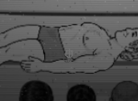
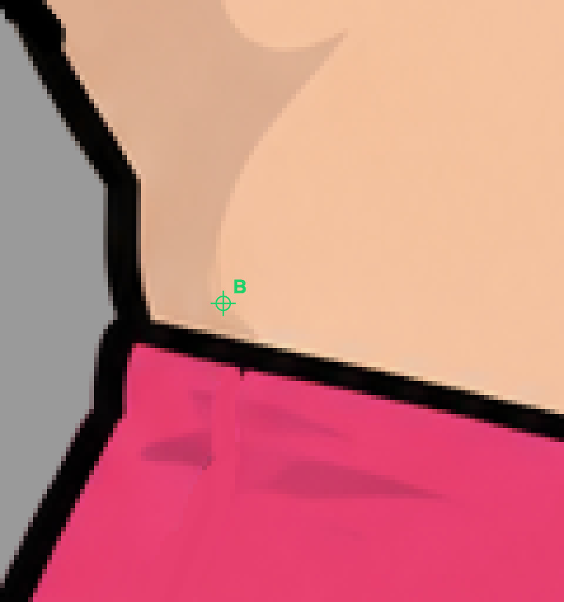
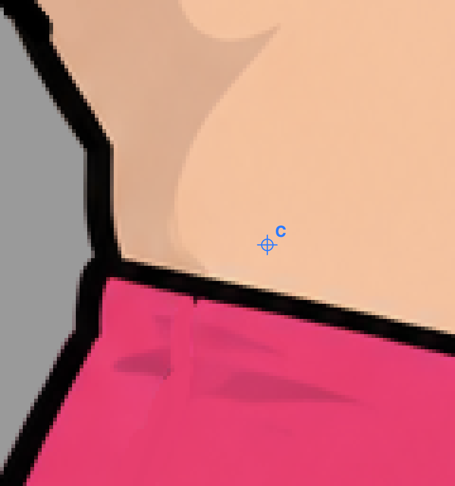
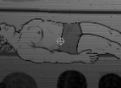
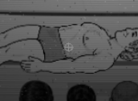
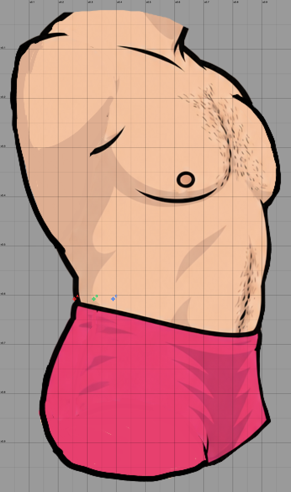

Proposal only: nothing is in the rig. Found from the torso art's back contour at the top of the trunks (346×585 source px, shown 45.3 px wide in the game). Insets are game px.
| u | v | inset (game px) | source px | |
|---|---|---|---|---|
| A | 0.2558 | 0.6077 | 0 | 0 |
| B | 0.3223 | 0.6077 | 3 | 23 |
| C | 0.3887 | 0.6077 | 6 | 46 |
u 0.2558, v 0.6077
0 game px inside the contour (0 source px); the pixel under it is black

u 0.3223, v 0.6077
3 game px inside the contour (23 source px); the pixel under it is skin

u 0.3887, v 0.6077
6 game px inside the contour (46 source px); the pixel under it is skin



